幾何光學模擬
開放原始碼的網頁程式，模擬光的反射與折射。
可用於物理教學及演示。


工具
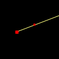
單一光線
由兩點決定一條光線。
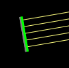
平行光
由一線段產生一束平行光，密度由「光線密度」滑桿決定。
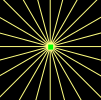
點光源
由一點向四周發射光線，數量由「光線密度」滑桿決定。
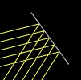
鏡子
模擬光線射到鏡子時的反射。
鏡子 (曲線)
曲線形的鏡子。可選圓弧或拋物線。
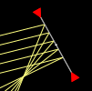
理想曲面鏡
完全符合面鏡公式(1/p + 1/q = 1/f)的理想化「曲面」鏡，可直接設定其焦距(單位為像素)。
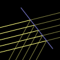
分光鏡
能穿透一個比例的光的鏡子。
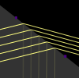
透光物
模擬光線經過透光物體界面時的反射與折射。
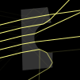
透光物 (其他形狀)
任何由線段與圓弧組成的透光物，包括三稜鏡與「球面」透鏡。
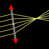
透光物 (理想透鏡)
完全符合薄透鏡公式(1/p + 1/q = 1/f)的理想化透鏡，可直接設定其焦距(單位為像素)。
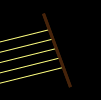
吸光片
線段形狀的吸光片，光線射到其上後就不會再射出。
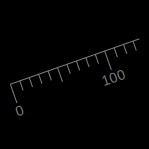
直尺
指定原點與另一點。刻度單位為像素。
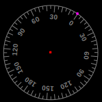
量角器
指定圓心和圓周上一點作為零度位置。刻度單位為度。
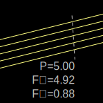
探測器
測量通過一線段的能量流率(P)、垂直動量流率(F⊥)與水平動量流率(F∥)。單位為任意。呈現方式
光線
畫出光線。當「光線密度」高時，光線呈現連續。 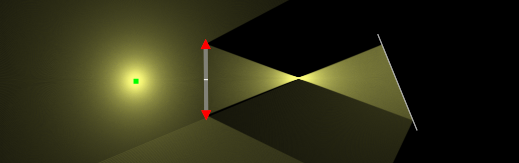
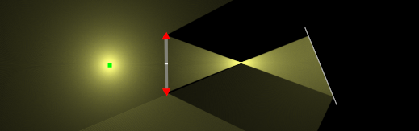
延長光線
除光線實際路徑外，亦畫出其延長線。橘色、灰色分別表示向後、向前的延長線。
所有像
點出像的位置。黃點表示實像，橘點表示虛像，灰點(圖中沒有)表示虛物。注意「光線密度」不夠高時有些像無法正常顯示。
觀察者所見
模擬從某位置見到的光線與像。藍色圓形為觀察者，與其相交的光線被其「觀察」到。觀察者無法知道光線真正的起始位置，但若其在某處相交，它會認為光線是從該處來的。光線以藍色表示，相交處以橘色表示。
模擬色彩beta
模擬光源的顏色（波長）、混色與透光物的色散。